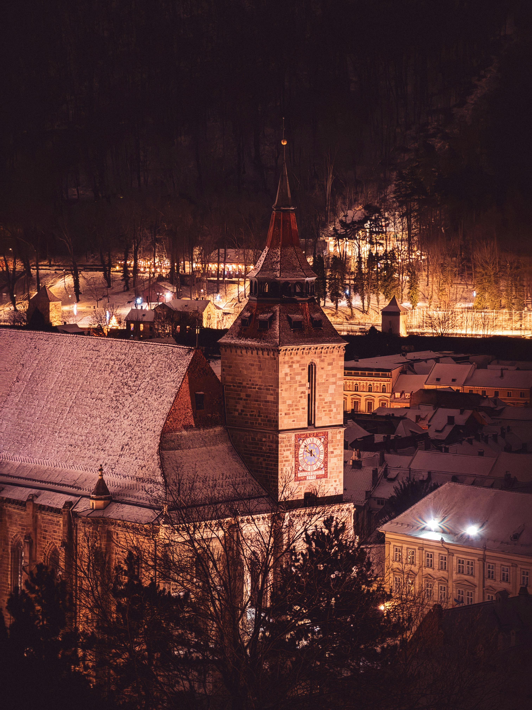
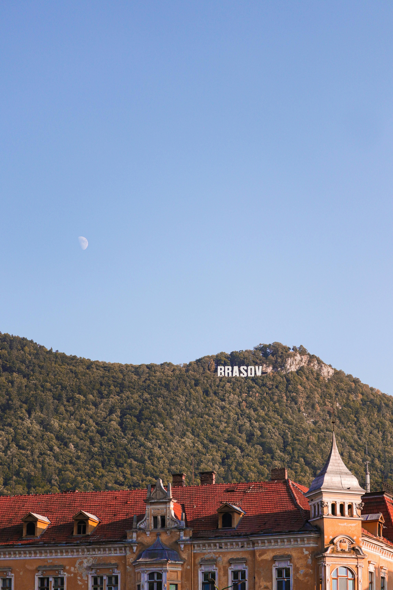
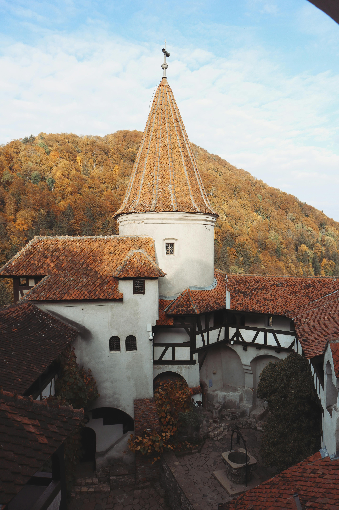
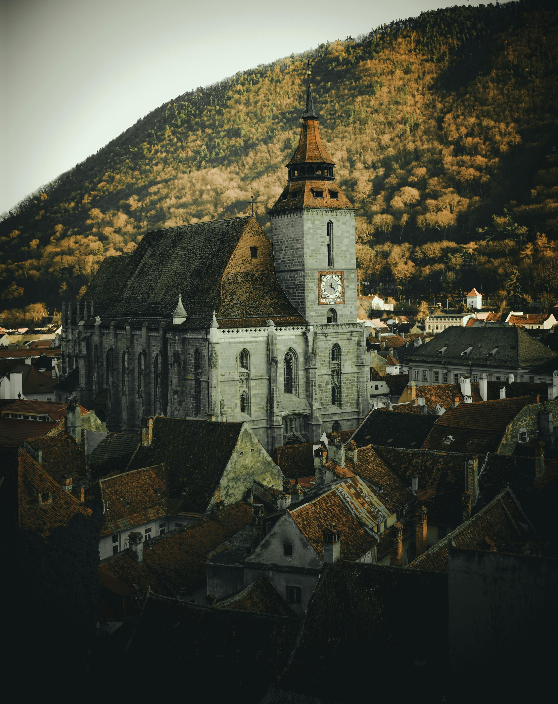
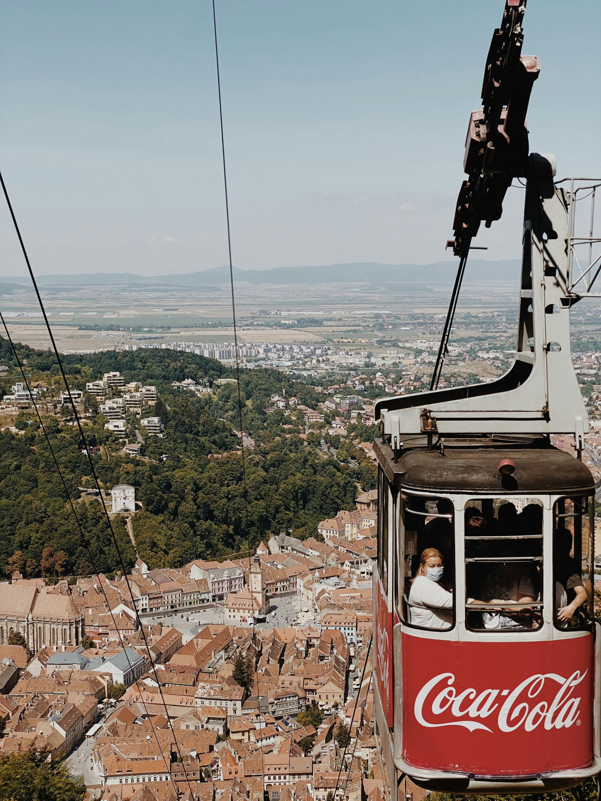
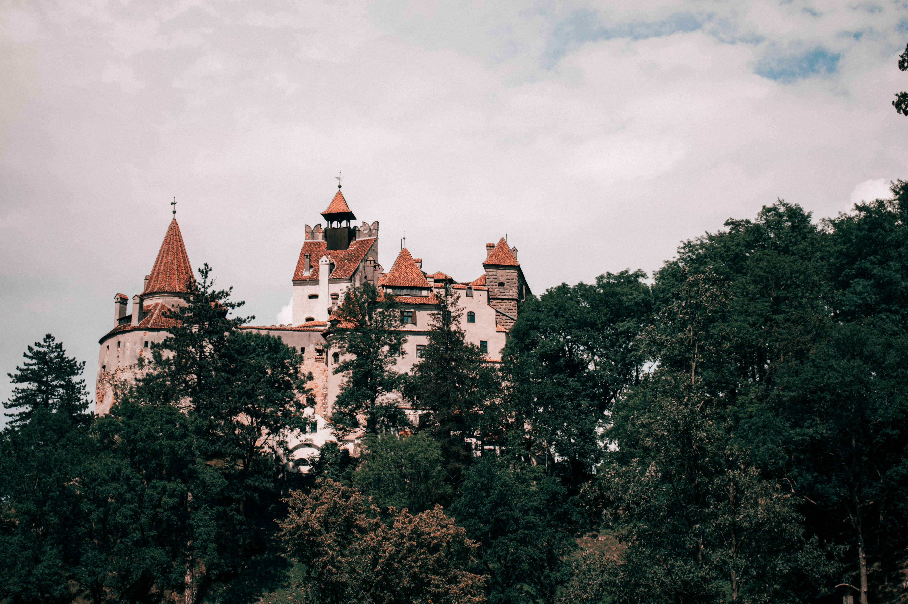

Top Attractions in Brașov
Brașov offers a unique combination of history, culture, and natural beauty. Visitors can explore well-preserved medieval landmarks such as the Black Church and the charming Council Square, where centuries-old architecture tells the story of the city’s rich past. Beyond its historic center, the city is surrounded by the breathtaking Carpathian Mountains, providing scenic views and opportunities for outdoor activities like hiking, skiing, and wildlife spotting. The city also serves as a gateway to iconic destinations, including Bran Castle and the fortified churches of Transylvania, making it one of Romania’s most popular and diverse travel spots. With its vibrant atmosphere, welcoming cafés, and blend of tradition and modern life, Brașov offers an unforgettable experience for every type of traveler.

The Black Church
The Black Church (Biserica Neagră) is one of Brașov’s most iconic landmarks and one of the most important Gothic buildings in Romania. It is known for its impressive architecture, historic interior, and strong connection to the city’s medieval past. The church gained its dark colour due to pollution during Brașov’s industrial period. It also houses one of Europe’s largest collections of Oriental carpets, adding to its cultural and historical importance. Learn More

Mount Tâmpa
Mount Tâmpa rises above the city of Brașov and offers breathtaking panoramic views of the whole city. Most of the mountain is a declared nature reserve due to the rare animal species and plant species that are found there. Visitors can hike or take the cable car to the top, making it a perfect destination for nature lovers and photographers. At the summit, visitors can also see the iconic “BRAȘOV” sign, which has become a popular landmark and photo spot overlooking the city. View Details

Bran Castle
Located just outside Brașov, Bran Castle is one of the most famous attractions in Romania. Often associated with the Dracula legend, it combines fascinating history with dramatic scenery and a unique cultural experience.Originally built in the 14th century as a fortress, the castle played an important role in defending the region from invasions. Today, it functions as a museum showcasing historical artifacts, royal collections, and insights into Romania’s rich heritage. Book Tickets
Attractions Gallery
Explore more of Brașov’s best-known landmarks through images of historic architecture, dramatic scenery, and iconic attractions.


